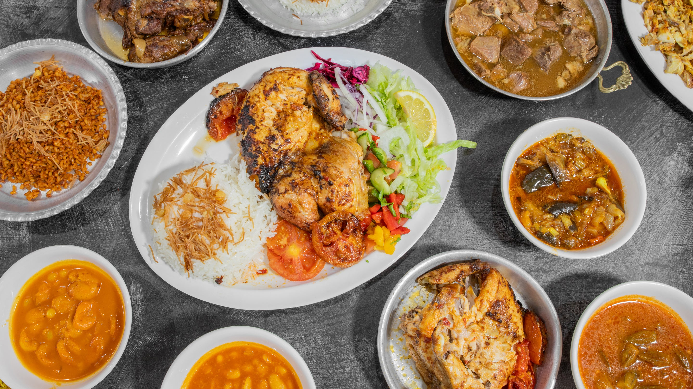
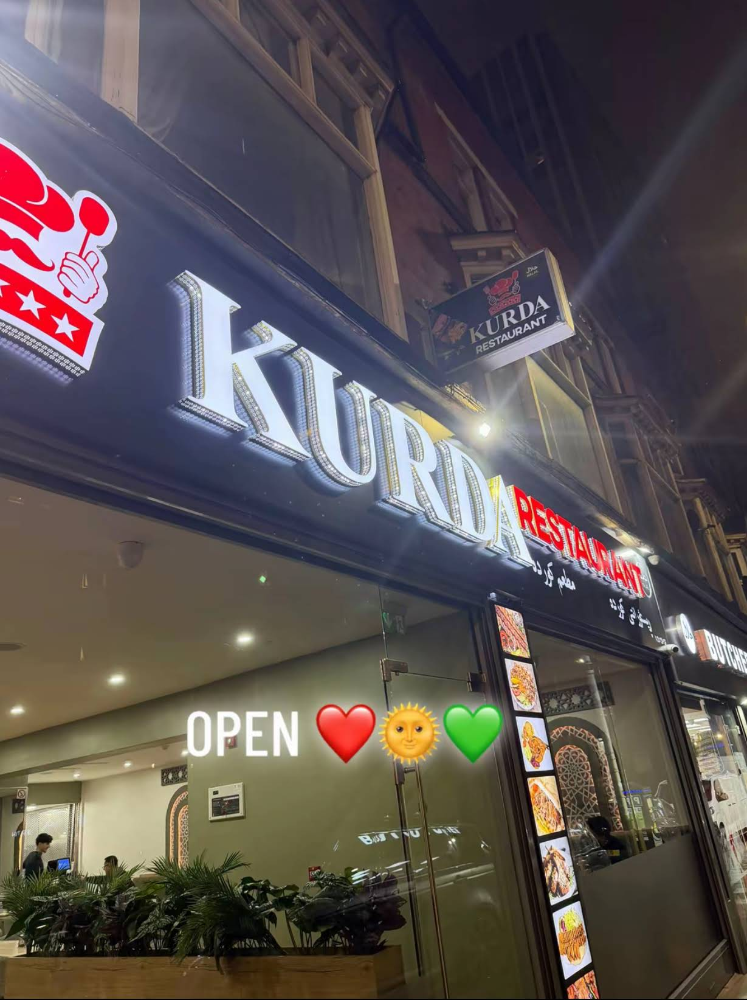

Slow-cooked & comforting
Lamb qozi with rice or biryani and a soup choice. Tashreeb brings naan, soup and lamb together.
 KURDARESTAURANT · LEICESTER
KURDARESTAURANT · LEICESTERKurda Restaurant · Leicester
From the grill. For the table.
Illustrative setting and food photography. Original Kurda photograph below.
Explore tikka, kebabs and the published grill selection.
10–12 HUMBERSTONE ROAD · LEICESTER
Slow-cooked lamb. Tikka from the grill. Rice, stews and something for the middle of the table.

GET YOUR QUESTIONS TOGETHER
Put a few meal notes together before speaking to the team. Nothing is sent, saved or reserved.
Ask about the food, notice needed, date, price and dietary requirements. A menu entry alone cannot confirm the arrangements.
YOUR NOTE · NOT SENT
This is a local planning aid. It does not check availability or make a reservation. Call the number published on the Google business listing to discuss the arrangements.
Call the listed restaurant number ↗ORDERING FOR DELIVERY?
See current provider prices, delivery coverage and available dishes on the existing merchant page.
FIND KURDA
Confirm current opening and food service times with the team.
07459 948776Phone published on the Google business listing, checked 20 October 2026. No WhatsApp service is inferred.
For an advance meal, ask about notice, price, group arrangements and dietary requirements.

Illustrative food photography. Original Kurda photograph below.